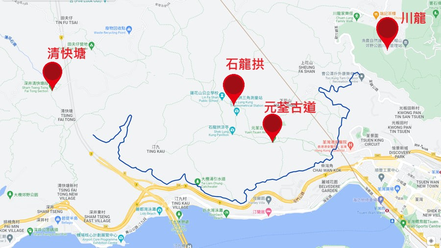
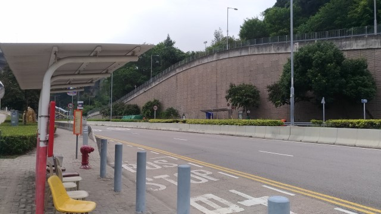
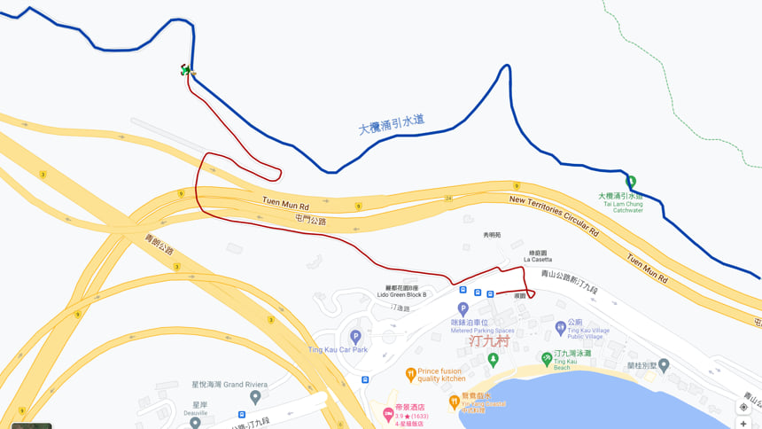

大欖涌引水道兩旁有很多登山遠足路線, 可以接上石龍拱、清快塘、深井、元荃古道、川龍等等的地方。我計劃稍後逐條路線的走。
汀九村是往大欖涌引水道汀九段的最理想地點, 只要沿馬路一直往上走便可以, 十分輕鬆!
因為日後部份遊記都可能從汀九村出發, 為免不斷重覆拍攝從汀九村步行上大欖涌引水道汀九段這段路線, 所以特別獨立製作了這一段行程。而以後有關遊記的這段路線, 都會參考這個影片。
來汀九村, 最方便從荃灣乘小巴或巴士來, 在汀九站下車。如果從屯門乘小巴或巴士來, 車站就在馬路對面。
下車後, 留意馬路對面的斜坡。大欖涌引水道汀九段的登山口就在斜坡上面, 只要沿前面的天橋走過馬路, 再走上一小段斜坡就可以到達。
Okay! 立即出發!
前面的路口就是大欖涌引水道汀九段的登山口啦!
在這裡開始, 沿馬路一直走到盡頭就是大欖涌引水道汀九段。中間沒有分叉路口, 不會走錯路的。
穿過這條行人隧道後, 接著的一段路比較斜, 會有點吃力的。
沿登山馬路走了大概15分鐘, 就來到大欖引水道汀九段啦! 應該不是太辛苦的。
右邊的路是往荃灣、川龍、大帽山等地。
而左邊的路可以往清快塘、田夫仔、大欖涌水塘等地。
我們往後從大欖涌引水道汀九段出發的登山遠足路線都會以這裡為起點。